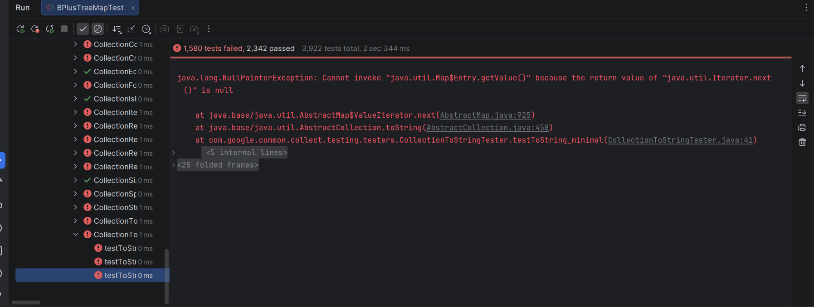

Speed without correctness is a bug, not a feature. This document tracks the grueling validation pipeline that forged the ChaosTree engine—from Guava testlib failures to property-based fuzzing at 1,000,000 tries.
Passing Google Guava's NavigableMapTestSuiteBuilder against 214,680 permutations was a massive
milestone. It validated that the engine mathematically honored the standard JDK contracts.

The early days: When standard contract validation was still failing.
But even after having all the standard contract validation pass, it did not feel like I passed the test. Guava is blind to the internal topology of an N-ary tree. It didn't know about degree parameters, fill factors, or dummy overflow slots. I had to go deeper.
To truly validate the architecture, I built a bleeding edge custom API testing pipeline. Every operation was
verified
against a shadow instance of the JDK TreeMap acting as the ultimate source of truth. The pipeline
executed the following gauntlet:
1. Build the tree (via Dragon Feed or Iterative) 2. Verify API integrity (Size, Iteration Order, Bounds) 3. Serialize via custom exportFlatMatrix() 4. Rebuild from the deserialized flat matrix 5. Re-verify the API 6. Perform the "Drain Dangling" test (iteratively strip elements and assert zero dangling internal nodes)
All of this was supervised step-by-step by checking equivalence against a standard TreeMap.
It was during this custom pipeline that I encountered my first test errors for the iterative bulk load. The randomizer found the absolute edges of the capacity mathematics.
The bulk loader didn't just fail randomly—it failed on highly specific topological edge cases. For example, at a specific fill factor of 0.655f combined with degree 11, exact boundary numbers like 2989 and 3999 elements would completely break the capacity windows and crash the tree.
Finding these exact failing numbers manually was tedious. I took these concrete failing data points, pulled them into a jqwik property-based testing format, and turned the dial up to absolute maximum.
I ran the randomized fuzzing tests at 1,000,000 tries per execution. The engine was bombarded with randomized
degree sizes, randomized fill factors, and randomized array shapes. This is where Chaos
truly commenced. The math was forced to adapt until it survived a million topological permutations without a
single dangling node or out-of-bounds error.
The journey did not end with the unit tests passing. Before true performance benchmarking could even begin, Benchmark Correctness was necessary. A JMH benchmark is useless if it measures the speed of a broken state machine.
Only after the 1-Million-Try jqwik gauntlet mathematically verified the Dragon Feed could the JMH
execution times be trusted as absolute truth.
After traversing the Guava gauntlet, the custom API serialization pipeline, the extreme edge-case debugging, and
surviving the 1,000,000-try jqwik fuzzing runs... Maven finally gave me exactly what I wanted.
[INFO] Results: [INFO] [INFO] Tests run: 214711, Failures: 0, Errors: 0, Skipped: 0
This is what absolute, mathematical correctness looks like.